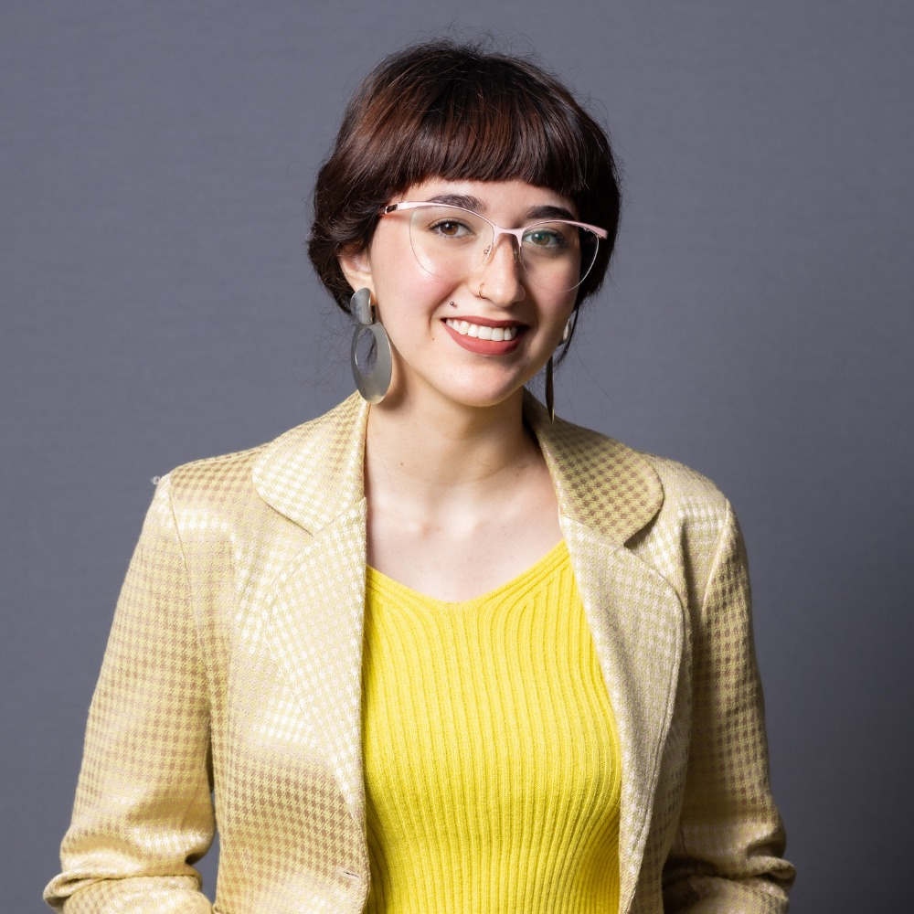

Olá somos a newstart-Unico, um grupo de jovens totalmente diferentes um dos outros, no qual formaram uma família, todos em busca de melhores condições de vida e ingressar no mercado de trabalho unidos. Esse site que estão vendo foi TOTALMENTE desenvolvido por nós, para que possam conhecer um pouco sobre quem somos, além de inúmeras outras surpresas. PORÉM para descobrir continue lendo e seja BEM VINDO!
Sobre o Instituto Ser +
O Instituto Ser+ tem sido um farol de apoio inestimável em nossa jornada educacional. Através da dedicação incansável dos professores e funcionários, somos agraciados com um suporte e uma orientação única. A cada aula, mergulhamos em um oceano de conhecimento, explorando novos horizontes e aprimorando nossas habilidades de forma excepcional. O ambiente acolhedor e estimulante proporcionado por essa instituição nos impulsiona a desafiar nossos limites, permitindo-nos crescer não apenas academicamente, mas também como indivíduos.
E por que fazer isso? Qual o objetivo?
O projeto New Start Unico, pelo Instituto Ser+ em parceria com UNICO IDtech, o objetivo de desenvolver competências comportamentais, como resolução de problemas e raciocínio lógico, além de construção de conhecimentos técnicos em programação (front-end), tecnologia da Informação lógica de programação como: HTML, CSS, JavaScript, além explorar projeto de vida e carreira.
Com qual apoio fazemos isso?
Esse projeto com parceria da empresa Unico IDtech, está abrindo portas para os jovens estudantes descobrirem o vasto mundo da tecnologia, além de auxiliar na preparação para o mercado de trabalho no setor Tech. Além de novos profissionais, abre um campo enorme para fortalecimento e maior diversidade no setor.
"Eu já estou evoluindo bastante e todo mundo evolui junto." —Ariel Dell'Aringa
"Vou dar meu máximo, porque eu quero muito seguir nesse ramo." —Vinicius Silva
"[...]O curso me ajudou bastante a conhecer o básico, a base do que era necessário." —Fernando Alves
"Eu pensei que não ia conseguir aprender, pois nunca tive muito contato com a tecnologia, mas está sendo bem diferente, está sendo agradável, junto do meus colegas de sala. Eu estou gostando bastante de desenvolver. É muito interessante." —Marjorie Juliana
Trechos retirados do Youtube. Clique e veja mais!-

Adryan Lopes
Área de interesse: Programação/Front-End
LinkedIn -

Ariel Mori Dell'Aringa
Área de interesse: Design/Moda/Programação
LinkedIn -
Bianca Vasconcellos
Área de interesse: Programação
LinkedIn -
Carlos Eduardo
Área de interesse: Programação
LinkedIn -

Dhullyo Humberto
Área de interesse: Marketing
LinkedIn -

Eric Gabriel
Área de interesse: Programação
LinkedIn -
Felipe Vieira
Área de interesse: Programação
LinkedIn -

Fernando Alves
Área de interesse: Progamação/Hardwere
LinkedIn -
Gabriel de Almeida
Área de interesse: Jurídica
LinkedIn -
Gabriel Aquino
Área de interesse: Programação/Cibersegurança
LinkedIn -
Giovana Custódio
Área de interesse: Administração
LinkedIn -
Giullia Castro Rodrigues
Área de interesse: Comunicação e Design
LinkedIn -

Gustavo Moreira
Área de interesse: Marketing
LinkedIn -
Higor Rodrigues
Área de interesse: Analise de sistema
LinkedIn -

Kaique Jacomé
Área de interesse: Comunicação, Administração, Design e Moda
LinkedIn -
Kemilly Pardinho
Área de interesse: Comunicaçao/Design
LinkedIn -

Lawan Souza
Área de interesse: Programação/Administração
LinkedIn -

Luiz Otávio
Área de interesse: Programação
LinkedIn -

Marjorie Juliana
Área de interesse: Administração
LinkedIn -

Nickolas Rocha
Área de interesse: Programação
LinkedIn -

Orion Bento
Área de interesse: Programação
LinkedIn -
Renato Cristian
Área de interesse: Marketing/Design Gráfico
LinkedIn -
Ricardo Bernardes
Área de interesse: Programação/Publicidade
LinkedIn -
Thaissa Islaine
Área de interesse: Administração
LinkedIn -
Vinicius Silva
Área de interesse: Comunicação e Design
LinkedIn -
Victoria Veroneze
Área de interesse: Administração/Marketing
LinkedIn -
Vitoria Paoli
Área de interesse:Programaçao, Marketing, Administração, Publicidade
LinkedIn
selecione para conhecer mais

Adryan Lopes Lourenço Fonseca
Tenho 22 anos, eu já sou do meio da tecnologia a um bom tempo, seja por conta da minha família ou por conta dos meus amigos, meu pai tinha uma lanhouse então era fácil para mim entender algumas coisas sobre informática, até se tornou um normal pra mim, isso fez me surgir um sonho de ficar famoso com meus softwares. Atualmente eu estou focando no front-end com base nas linguagens JavaScript, Python e Golang, buscando me tornar um full-stack, por isso gosto de dizer que sou um desenvolvedor em constante desenvolvimento.

Ariel Mori Dell’Aringa
Meu nome é Ariel e tenho 18 anos, cursei meu ensino médio Integrado ao técnico de Moda na Etec e isso serviu como um divisor de águas pra mim no quesito carreira porque eu sempre gostei muito de desenhar, pintar, explorar. Então quando entrei no mundo da moda passei a continuar explorando fora da minha zona de conforto. E agora estou no curso de tecnologia do Instituto Ser+ em parceria com a empresa Unico IDtech, e na verdade é uma área muito distante de Moda mas mesmo assim resolvi encarar e me surpreendi quando comecei o curso, e agora juntando Design e Tecnologia estou buscando me integrar na area de Ux e Ui design.

Bianca Vasconcellos Lopes Silva
Sou uma jovem adulta de 22 anos que possui um grande interesse em aprender diversos assuntos, sou apaixonada pela área ambiental e possuo como objetivo o curso de ciências biológicas (bacharelado). Recentemente estou tendo a grande oportunidade de obter conhecimentos na área de tecnologia, o que me despertou um grande fascínio e interesse na parte de programação voltada para o desenvolvimento e análise de sistemas. Me formei no ensino médio na Etec Paulistano em junção ao técnico de meio ambiente, após isso realizei um curso de preparação para ingressar no mercado de trabalho pela Associação Cultural e Desportiva Bandeirantes. Gosto de passar meu tempo livre fazendo coisas que eu tenho interesse como, ler, escrever, jardinagem e assistir filmes, séries ou documentários.
Carlos Eduardo Duarte Bispo
Olá, sou Carlos Eduardo Duarte Bispo, 18 anos da Zona Leste de São Paulo. Tenho paixão por ler livros e jogar, enquanto me divirto lutando e correndo. Meus sonhos envolvem buscar constante aprimoramento. Espero que este curso me ajude a fortalecer minha voz. Tenho o desejo de trabalhar na área de programação ou marketing.
Dhullyo Humberto Milhomem da Silva
Sou o Dhullyo Humberto, tenho 19 anos, sou aluno do curso New Start-Unico onde desenvolvo habilidades em HTML e CSS, o que vem sendo uma grande oportunidade para o meu objetivo de me tornar desenvolvedor web. Tenho o poder de desenvolver conhecimentos em geral, dentro do projeto faço parte do desenvolvimento de mídia.
Eric Gabriel Sousa Barreto
Seja bem vindo(a) ao meu perfil! Me chamo Eric e sou apaixonado por tecnologia, tenho um perfil desbravador, gosto de entender novas tecnologias e desde pequeno me interessei em saber o funcionamento dos sistemas desde o seu desenvolvimento. Hoje estou cursando Análise e Desenvolvimento de Sistemas e pretendo ingressar no mercado de trabalho na área de tecnologia, para continuar me desenvolvendo e aprimorando habilidades com muita vontade para futuramente ser um desenvolvedor full stack de sucesso que apoia empresas a alcançarem seus resultados!
Felipe Vieira Gonçales
Meu nome é Felipe, tenho 18 anos, tenho 1,77 de altura, peso 71kg. Nasci no Estado de São Paulo, na cidade de São Paulo, região da Zona Norte, e desde então moro aqui. Meus Hobbys são assistir Séries e Jogar Vídeo Games, e as vezes ir Academia. Ainda sou estudante do Ensino Médio, e atualmente faço um curso de T.I. Meus maiores interesses nesse momento são de conseguir um emprego nesse mercado de trabalho, mas especificamente do lado do mundo de T.I, quero aperfeiçoar meu Inglês e minhas comunicação.

Fernando Alves de Melo da Silva
Oi, sou o Fernando, 18 anos da Zona Leste. Curto mexer no PC, ir à igreja e estar com amigos, família e ouvir música. Meu objetivo é ser programador profissional ou aviador para explorar o mundo. Estou focado em aprender mais programação para entrar no mercado de trabalho. Quero seguir carreira como programador ou piloto de avião.

Gabriel de Almeida
Olá, chamo-me Gabriel de Almeida e atualmente curso o segundo semestre de direito, na faculdade São Judas Tadeu. Entrei no curso da Unico para aprender sobre informática, com a expectativa de só aprender sobre tecnologia, porém foi muito além, principalmente com a mentoria no qual foi MUITO bom para mim principalmente no meus estudos jurídicos. Apesar de meu foco ser seguir a área jurídica, ele me fez sair da bolha.
Gabriel Aquino Gama Teófilo
Olá, meu nome é Gabriel Aquino, tenho 19 anos, moro em Itaquera, um dos meus hobbies atuais é a leitura, minha expectativa com o curso é ampliar o meu horizonte sobre a área de desenvolvimento de sistemas, para que eu possa me tornar um ótimo profissional neste ramo, e a profissão que desejo é relacionado a Analise e Desenvolvimento de Sistema ou Cibersegurança.

Giovana Custodio Fernandes
Me chamo Giovana, tenho 18 anos, faço aniversário no dia 21 de fevereiro, tenho quatro irmãos e moro em Ferraz de Vasconcelos. Os meus hobbies favorito é escutar músicas e sair para lugares mais calmos. Sou uma pessoa mais tímida e reservada. Já fiz curso online de atendimento ao público na Bradesco e no momento estou fazendo o curso de tecnologia que está sendo bem agradável e interessante, pois antes eu nem pensava em fazer essa área e nesse curso estamos fazendo um projeto final e eu estou fazendo parte do grupo de pesquisa que fica com os artigos e diante disso poderemos mostrar o que a gente realmente aprendeu durante o curso.

Giullia Castro Rodrigues
Me chamo Giullia, tenho 18 anos, moro na zona leste de São Paulo, sou um pouco ambiciosa então tenho muitos sonhos, mas o que eu tenho mais focado meu tempo e atenção é me desenvolver na carreira que eu quero seguir e conquistar meu apartamento próprio, gosto muito de estudar e ler sobre coisas que tenho interesse. Entrar nesse curso foi mais que necessário para o meu desenvolvimento, tanto pessoal quanto profissional, aprendi muito e da melhor forma possível, com as melhores pessoas possíveis, um curso interessante e uma ótima oportunidade pra quem sabe aproveitar. O curso me ajudou a entender que tenho mais interesse na área de marketing e design, áreas que me desenvolvi melhor e descobri que gosto muito!Sou Giullia, tenho 18 anos, moro em São Paulo, zona leste, gosto de ler e ficar com pessoas que eu amo, meu sonho é construir uma família e conquistar meu próprio imóvel, minhas expectativas com o curso são grandes, me desenvolvi bastante até agora, tanto na vida profissional quanto na pessoal, desejo seguir nessa área de tecnologia.

Gustavo Moreira da Silva
Olá, me chamo Gustavo, 21 anos, Taboão da Serra, zona sul. Já fiz curso básico fundação Bradesco. É minha primeira vez no presencial e está sendo uma excelente experiência, o acolhimento e o ótimos professores! Gosto de andar de moto, passear com cachorro, sair com família, assistir podcast, estudo um pouco de tecnologia pelo YouTube. Sempre procuro conhecer e aprender novas coisas, tanto no trabalho quanto em vida. Vi a oportunidade de ter um conhecimento sobre tecnologia importante e vi que foi a melhor escolha que fiz nesse ano.
Higor Rodrigues
Olá, me chamo Higor, Tenho 18 anos moro na Zona leste de São Paulo. Participo do projeto do New Start Unico, onde aprimorei conhecimentos na área da tecnologia. Sou um jovem bem motivado e sempre procurei conhecer novos horizontes e pelo mesmo motivo participei do grupo de pesquisa no projeto, antes do projeto fiz um curso de Mecânica automotiva e 3 anos de Inglês. Tenho como pontos fortes a habilidade de trabalhar em equipe, comprometimento e a facilidade de interação com pessoas diferentes. Este projeto New Start, do Instituto Ser + com a Unico, tem me ajudado muito referente minha carreira pois tive grande avanço e interesse no mundo da programação.

Kaique Caitite Jacome
Olá, me chamo Kaique Jacome, tenho 21 Anos e resido na região de Guarulhos. Atualmente estou perto de finalizar o curso de programação pelo Instituto Ser + com parceria com a Unico IdTech e está sendo uma experiência incrível. No meu tempo livre, gosto de jogar videogame, jogar Futebol, assistir filmes e séries, ir para a Igreja e passar bons momentos com aqueles que amo. Nossas expectativas ao final, são que todos consigam uma oportunidade de emprego e possamos mostrar e colocar oque aprendemos em pratica.

Kemilly Mendes Pardinho
Sou a Kemilly, tenho 20 anos, sou estudante de Análise e Desenvolvimento de Sistemas, realizo suporte pedagógico pela Ong Escola Comum e sou Coordenadora Municipal de um Projeto chamado Sobre Nós, sou apaixonada por podcasts de ciência e história, tenho uma mini biblioteca de livros e toco alguns instrumentos nas horas vagas.
Lawan Felipe De Souza Barreto
Olá sejam bem vindos, me chamo Lawan tenho 19 anos, moro na Zona Sul de São Paulo na região do Grajaú. Atualmente estou cursando Analise e Desenvolvimento de Sistemas na faculdade Unipaulistana, no campus Vila Mariana. Sempre fui apaixonado em tecnologia, porém comecei ficar ainda mais interessado quando comecei a fazer um curso de Hardware em 2019. Tive a oportunidade de entrar no instituto através do meu primo que me contou sobre este curso, e desde de que entrei tenho amado casa aula, os educadores são excelentes, realmente não deixam a desejar nada, com eles tive a chance de poder ter um bom desenvolvimento profissional e pessoal, em vários aspectos. No meu tempo livre eu gosto de tocar violão, ir para igreja que é algo que faz eu me sentir super bem, jogar futebol, andar de skate, praticar vários esportes. Meu sonho é poder ter uma vida financeira estável, e poder viajar para vários países para conhecer novas culturas e lugares diferentes.
Luiz Otávio Tavares de Carvalho
Sou o Luiz Otávio, tenho 18 anos, moro em São Paulo na região de Itaquera. Faço parte do projeto New Start Unico, no qual estou quase finalizando. Gosto muito de ler HQs e em meu tempo livre eu jogo vídeo game com meus amigos. Tenho o desejo de cursar T.I. e me inspiro em meus familiares para não desistir desse sonho. Minhas qualidades são ótimo desempenho em trabalho em equipe, sou bastante comunicativo e comprometido com as tarefas que me pedem. Sempre tive interesse na área de tecnologia e me aprofundei com o curso do Instituto Ser+ e gostei mais ainda do campo da programação.
Marjorie Juliana de Souza Galdino
Oi pessoal, meu nome é Marjorie, tenho 21 anos e moro em São Paulo com meus pais. Pessoalmente gosto muito de estudar, ouvir músicas, assistir filmes e participar de eventos culturais. Fiz curso do Start Digital 2021 e atualmente faço parte do curso New Start Unico 2023 com o apoio do Instituto Social Ser Mais, que está me proporcionando conhecimentos técnicos / sociais na área da tecnologia, me apaixonei por desenvolver site e pretendo me aprofundar mais detalhadamente nessa área e com isso conquistar um emprego na Unico IDtech para fazer parte desse time que a levará a ser referência de inovação e tecnologia no Brasil e no mundo. Meu sonho é conquistar uma vaga na área de programação ou administração na Unico, para adquirir conhecimentos específicos de maneira voltada a tecnologia. No projeto final, eu fiz parte da programação, auxiliei na parte da aba do site de Contatos, onde fiz o backup das informações necessárias de cada um da turma.
Nickolas Rocha Da Cruz
Olá, eu sou o Nickolas Rocha, tenho 18 anos e faço parte do projeto de tecnologia da New Start único. Mesmo sendo jovem, já trabalhei em diversas áreas, mas foi na tecnologia que eu me encontrei e tenho me empenhado muito para construir uma carreira nessa área. Espero que esse projeto seja apenas o começo de uma caminhada de muito aprendizado, realizações e crescimento profissional.
Orion Bento Ferretti Curso
Meu nome é orion Tenho 18 anos moro na cidade de Guarulhos, no projeto faço parte do grupo de comunicação, gosto de livro, também gosto de assistir séries e filmes, E pretendo cursar biomedicina, minhas expectativas sobre o curso E desenvolver novas habilidades, Construir um perfil profissional E me aprofundar na área da tecnologia.
Renato Cristian Silva
Olá, me chamo Renato, tenho 17 anos, sou da região do Capão Redondo, estudo no período noturno, finalizando a 3ª série do ensino médio. Já fiz alguns cursos profissionalizantes como gestão de empresas, administração, informática básica (Excel, word e powerpoint), atualmente no projeto estou na parte de comunicação e design.
Ricardo Bernardes de Freitas
Meu nome é Ricardo, o pessoal aqui me chama de Richas. Tenho 18 anos e moro na região da Zona Norte de São Paulo. Gosto bastante de ouvir rap e entender o significado de cada música. Costumo estudar bastante sobre filosofia, história e geografia. Minhas expectativas com o curso era poder adquirir mais conhecimento e usar o que eu aprendi para o ingressar numa empresa de tecnologia. Meu sonho é ser psicólogo e poder ajudar as pessoas por meio da psicologia.
Thaissa Islaine Mendonça Silva
Oi, sou Thaissa Islaine, 18 anos da Zona Leste. Adoro crianças, curtir momentos em família e com amigos, além de ter a igreja como parte importante da minha vida. Meu hobby é ouvir música. Sonho em um dia conhecer Nova York. No curso, busco conhecimento para um futuro na área administrativa, RH ou Financeira.
Vinicius Silva Soares
Sou o Vinicius, tenho 23 anos, moro na região Oeste de São Paulo, filho de pais nordestinos com sangue empreendedor. Sou uma pessoa comunicativa e que busco ser luz na vida das pessoas, tenho como pontos fortes o comprometimento, pontualidade e o trabalho em equipe. Gosto de me envolver com pessoas, tocar instrumentos e ter tempo de qualidade com meus amigos. Adquiri o hobbie da leitura, o que tem me ajudado muito nos estudos e conhecimento. Esse curso da New Start, do Instituto Ser + com a Unico, tem me ajudado muito pois já havia me planejado para a migração de carreira, e novas possibilidades, pois desejo seguir em áreas relacionadas ao design, interligando com programação.

Victoria Bandeira Veroneze
Olá, sou Victoria Bandeira Veroneze, tenho 18 anos e sou de Pirituba, na Zona Oeste de São Paulo. Amo explorar as religiões através da leitura e encontrar paz no acampamento. Viajar é minha paixão, e dedico tempo ao autocuidado. Meus sonhos são ter estabilidade financeira, minha casa própria e adotar um gato. Ansiosa para aprender programação no curso e almejo ser comissária de bordo.
Vitória dos Santos Paoli
Meu nome é Vitoria, tenho 20 anos, moro na zona sul de sp, gosto de estudar outros assuntos alem de tecnologia, como marketing e investimentos, meus hobbies inclui fazer academia e Correr com meus cachorros, entre meus sonhos inclui viajar para fora a trabalhar numa das maiores empresas de tecnologia do mundo, a google, minha expectativas do curso são aperfeiçoar meu conhecimentos em programação, como me tornar uma profissional e como melhorar meu network, com isso minha profissão desejada é de ser engenheira de solfware.